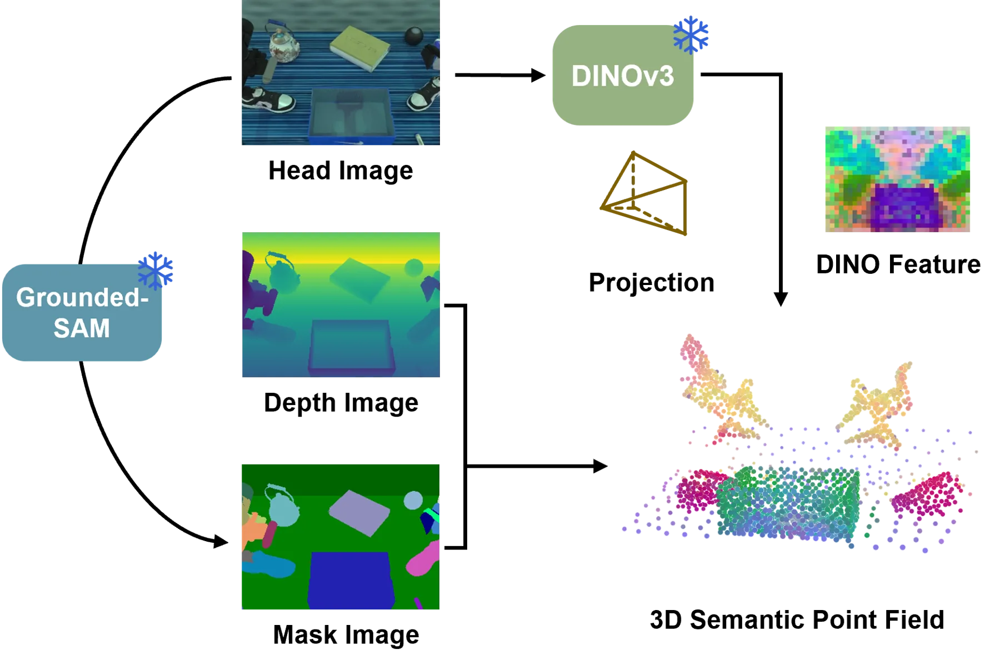
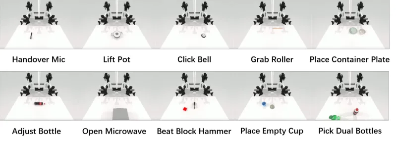
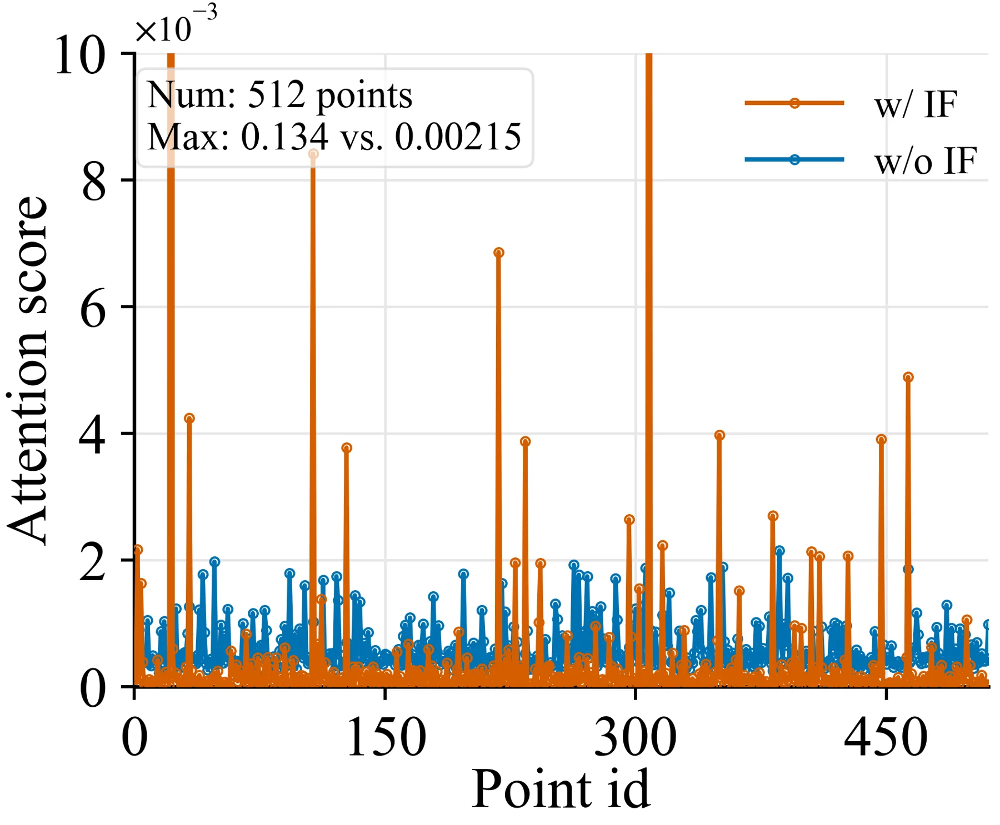
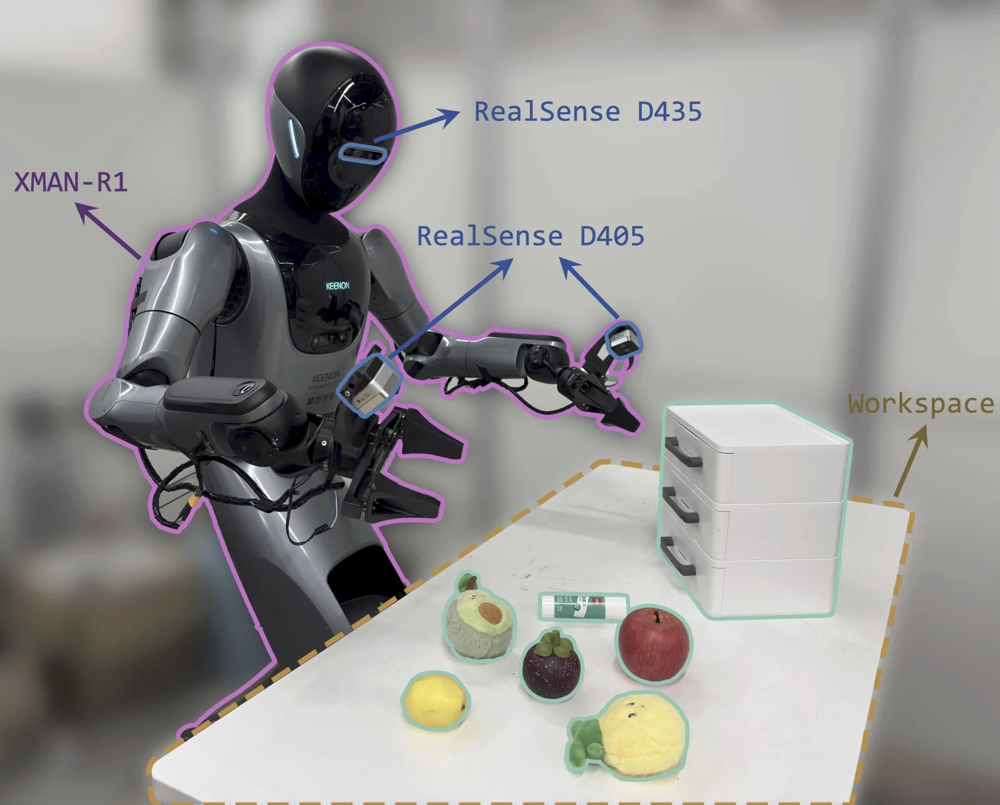
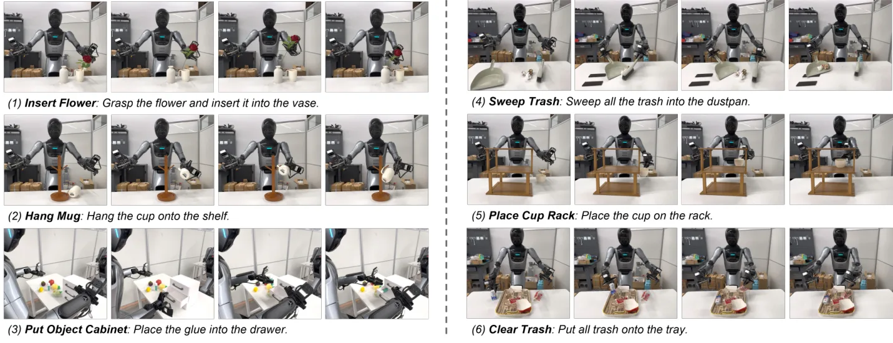

Bridge3D：让 VLA 在 3D 中看见并行动
Bridge3D: Enabling Vision-Language-Action Models to See and Act in 3D
在 RoboTwin 2.0 上超过 π0 14.0 个百分点，在真实实验中超过 Spatial Forcing 11.7 个百分点，目标是弥合 3D perception-to-action gap。
作者、单位与技术谱系 · Research context
作者与单位
研究脉络
- 2D VLA方法基座关系：Bridge3D 从预训练 2D VLA 出发，将几何先验接入感知和动作。[arXiv 官方 HTML v1]
- 3D foundation-driven VLA方法上游关系：论文 related work 将已有 3D feature fusion 与 point-cloud conditioning 作为上游，本文推进到显式动作条件。[arXiv 官方 HTML v1]
合作网络
- Bridge3DHUST / KEENON Robotics → 作者团队关系：共同署名/单位[arXiv 官方 HTML v1]
- Bridge3DRoboTwin 2.0 / Spatial Forcing → Bridge3D关系：公开比较/技术对照[arXiv 官方 HTML v1]
作者和单位是原文事实；技术脉络是基于公开原文/项目关系的解读；未据此推断导师或师生关系。
方法本质拆解 · What actually changed
是不是微调？
Bridge3D 以预训练 2D VLA 为基础，Implicit Fusion 使用冻结 3D foundation model 特征，并训练 adapter/策略侧模块；具体解冻范围和预算需以正文为准。它不是从零训练一个 3D policy。
有没有额外约束？
显式 3D semantic field 是动作去噪的空间条件，raw point cloud 保留度量几何。该约束直接作用于 action generation，而非只作用于视觉 token。
推理/后端到底做了什么？
推理阶段要构建/查询 3D semantic field，并在 action denoising 中使用它。没有证据表明它用传统全局 BA；核心是条件化策略推理。
方法本质是什么？
先把几何注入“看见”的表征，再把显式几何注入“行动”的生成变量。两级接口共同减少 2D 感知到 3D 操作之间的错位。
2D/3D观测 + 冻结几何特征与显式语义场 + 分层条件化动作去噪 → 更精确的空间操作。

动机与问题Motivation
动机与问题
2D-centric VLA 在精细空间操作中缺少度量几何，单纯加入隐式空间先验仍不能明确约束动作。作者把问题拆成 perception bottleneck 与 action bottleneck。
方法Method
方法总览
Implicit Fusion 用轻量 residual adapter 融合冻结 3D foundation features 与 VLM visual tokens；Explicit Conditioning 保留 raw point cloud geometry，建立 3D semantic field 并接入 action denoising。layer-wise linear probing 用于提高学习效率。
关键技术细节
显式分支不把点云压成完全丢失空间关系的单一 token，而是保留可查询的语义场。动作生成在去噪过程中读取该场，从而把空间关系传给末端动作，而不只改善视觉编码。

实验Experiments
实验设置
实验包括 RoboTwin 2.0 simulation benchmark 与 real-world manipulation；对照包含 π0、Spatial Forcing 等方法。指标是任务成功率，另有空间先验、层选择和点语义等消融。
实验数字与比较
RoboTwin 2.0 上 Bridge3D 比 π0 高 14.0 percentage points；真实实验比 Spatial Forcing 高 11.7 percentage points。具体任务数、成功率绝对值、硬件与训练预算需从官方 HTML 实验表核验。
消融/失败边界
论文分析 layer-selective explicit conditioning、point semantics 与 raw point-wise conditioning；去掉显式 semantic field 或改用更弱点特征会削弱动作侧的几何 grounding，精确变化待核表。点云质量、相机标定、遮挡和未见物体几何都会影响收益。
局限与迁移Limitations & Transfer
局限与待核验
作者附录列出 limitations/future work，但当前摘要未给出全部内容；需核对其对数据规模、计算量和泛化的明确承认。真实实验提升不能直接推出对长时程导航或动态场景的结论。
与你研究路线的关系
可迁移模块是“几何基础模型→视觉 token”和“显式语义场→动作去噪”的双接口。下一步可加入状态估计协方差或可观测性分数，比较几何不确定性对动作成功率、碰撞率与恢复策略的影响。
{kind=link}

{kind=link}

{kind=link}

{kind=link}
